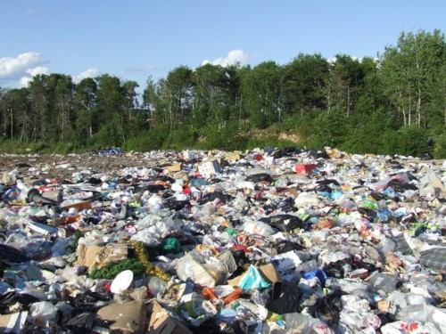
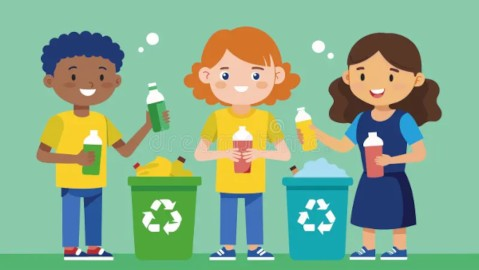

Did you know that recycling helps reduce waste in landfills and conserves natural resources? The benefits of recycling are numerous and impactful. For example, recycling one aluminum can save enough energy to power a TV for 3 hours. Another benefit is the reduction of greenhouse gas emissions associated with the production of new materials.

Recycling also helps conserve energy. For instance, recycling paper saves about 60% of the energy required to produce new paper from raw materials. Additionally, recycling plastic reduces the need for new plastic production, which is a major contributor to pollution and environmental degradation. Protecting the environment through recycling is a simple yet effective way to make a positive impact on our planet. By making small changes in our daily habits, we can contribute to a more sustainable future for generations to come.

| Myth | Fact |
|---|---|
| Recycling is not worth the effort. | Recycling helps reduce waste in landfills. |
| Recycling is too expensive. | Recycling conserves natural resources. |
| Recycling is not effective. | Recycling reduces greenhouse gas emissions. |